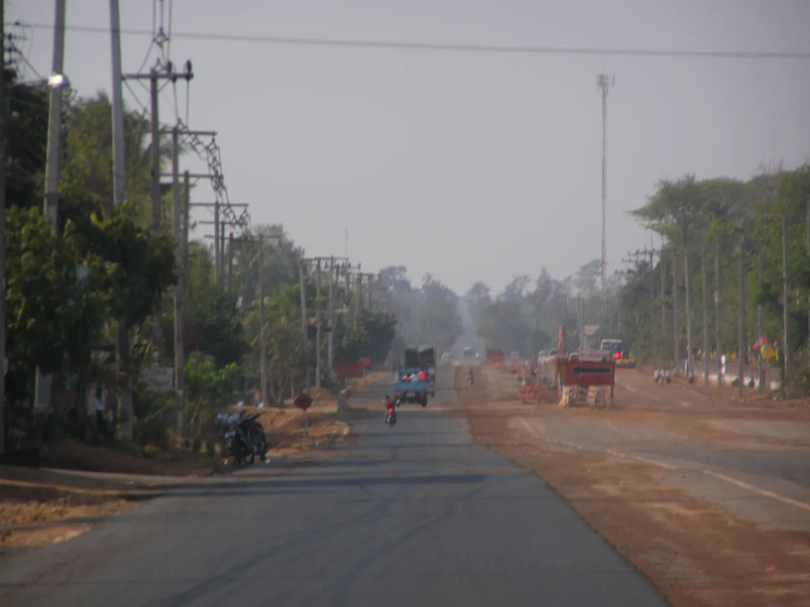
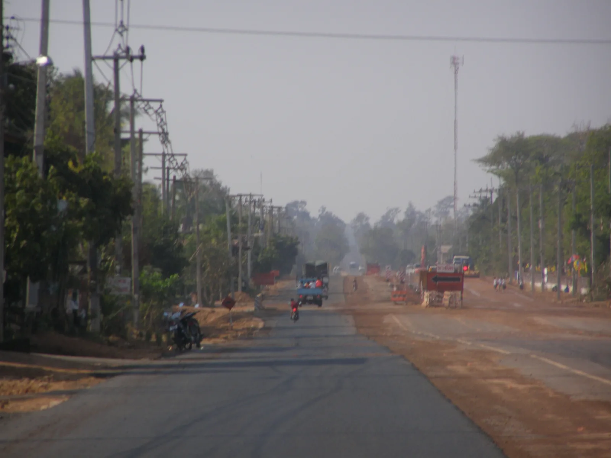

Phu Tha Khon rock gardenWat Tham Saeng Phet, Amnat Charoen Provinceภาพพระมงคลมิ่งเมือง

Voyage d'exploration en Indo-Chine (1873, Francis Garnier)

จังหวัดอำนาจเจริญ Amnat Charoen -Mukdahan rd.นายกรัฐมนตรี ปฏิบัติราชการจังหวัดอำนาจเจริญ 10ตุลาคม2552 (The Official Site of The Prime Minister of Thailand Photo by พีรพัฒน์ วิมลรังครัตน์)